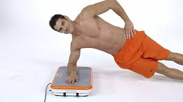
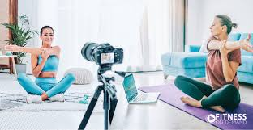
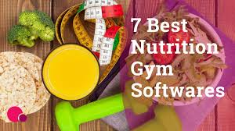
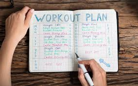

Our online coaching platform connects you with professional trainers to help you achieve your fitness goals. With personalized plans and expert guidance, you can access fitness resources anytime, anywhere.
Work with certified trainers who create personalized plans tailored to your fitness level and goals.
 personal trainer in a body fitness platform is a professional who provides personalized workout plans, fitness coaching, and guidance to individuals through an online or app-based platform.
Roles of a Personal Trainer in a Fitness Platform:
✔️ Customized Workouts – Creates tailored exercise routines based on fitness goals.
✔️ Virtual Coaching – Provides video tutorials, live sessions, or recorded workouts.
✔️ Progress Tracking – Monitors client progress using data and fitness metrics.
✔️ Nutritional Guidance – Advises on diet and healthy eating habits.
✔️ Motivation & Support – Encourages users to stay committed to their fitness journey.
Join live, interactive workout sessions to stay motivated and receive real-time feedback from experts.
A live workout session in a body fitness platform is a real-time exercise class where trainers guide participants through workouts via video streaming. These sessions can be interactive, allowing users to ask questions, receive feedback, and stay motivated.
🔥 Key Features of Live Workout Sessions:
✔️ Real-Time Training – Users follow workouts as they happen.
✔️ Interactive Coaching – Trainers give instant feedback.
✔️ Group or One-on-One – Sessions can be personal or for a group.
✔️ Customizable Workouts – Based on fitness levels & goals.
✔️ Engagement & Motivation – Live chat, Q&A, and community support
Get professional advice on meal planning, supplements, and nutrition to complement your fitness routine.
Nutrition coaching in a body fitness platform involves personalized dietary guidance to help users achieve their fitness and health goals. It is often integrated with workout plans to ensure a holistic approach to fitness.
🥗 Key Features of Nutrition Coaching in Fitness Platforms:
✔️ Personalized Meal Plans – Tailored diets based on fitness goals (weight loss, muscle gain, etc.).
✔️ Nutritional Guidance – Education on macronutrients, hydration, and healthy eating habits.
✔️ Calorie & Macronutrient Tracking – Helps users track their food intake.
✔️ Live Coaching & Support – One-on-one consultations with nutritionists or dietitians.
✔️ Recipe & Meal Prep Ideas – Easy-to-follow, healthy meal suggestions.
✔️ Integration with Fitness Plans – Aligns diet with workout programs for best results.
Monitor your progress with advanced tracking tools and weekly reviews from your trainer.
Progress tracking in a body fitness platform involves monitoring and recording an individual's fitness journey, such as workout performance, body metrics, and overall health improvements. This allows users to measure progress, adjust goals, and stay motivated over time.
📊 Key Features of Progress Tracking in Fitness Platforms:
✔️ Workout Logs – Track exercises, sets, reps, and weight lifted.
✔️ Body Metrics – Monitor weight, body fat percentage, muscle mass, and measurements.
✔️ Fitness Milestones – Set and track specific goals like running distance, strength goals, or flexibility improvements.
✔️ Visual Progress – Graphs, charts, and photo comparisons to see changes over time.
✔️ Integration with Devices – Sync with wearables like fitness trackers to automatically update data.
✔️ Weekly/Monthly Reports – Receive summaries of progress to adjust workout and nutrition plans.